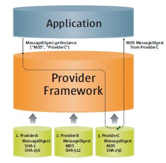
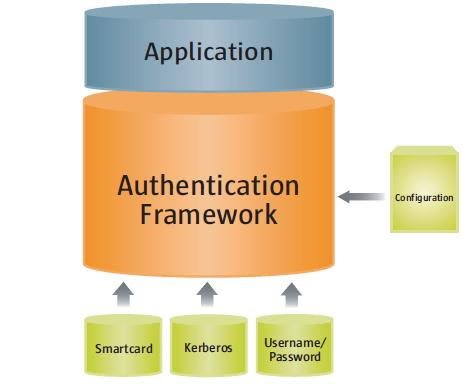
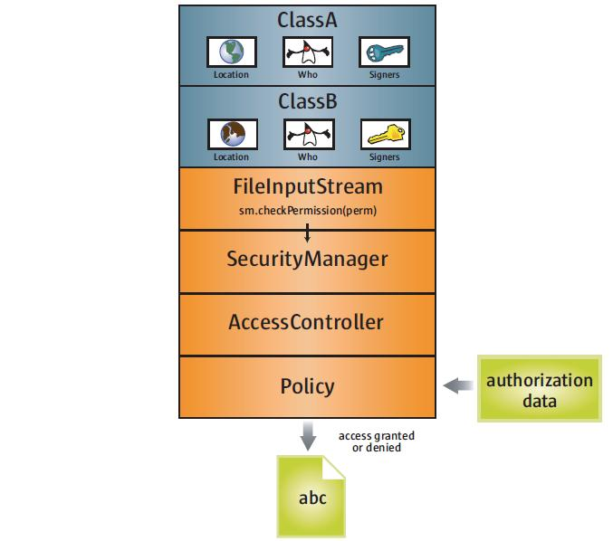

| Documentation Contents |
The Java™ platform was designed with a strong emphasis on security. At its core, the Java language itself is type-safe and provides automatic garbage collection, enhancing the robustness of application code. A secure class loading and verification mechanism ensures that only legitimate Java code is executed.
The initial version of the Java platform created a safe environment for running potentially untrusted code, such as Java applets downloaded from a public network. As the platform has grown and widened its range of deployment, the Java security architecture has correspondingly evolved to support an increasing set of services. Today the architecture includes a large set of application programming interfaces (APIs), tools, and implementations of commonly-used security algorithms, mechanisms, and protocols. This provides the developer a comprehensive security framework for writing applications, and also provides the user or administrator a set of tools to securely manage applications.
The Java security APIs span a wide range of areas. Cryptographic and public key infrastructure (PKI) interfaces provide the underlying basis for developing secure applications. Interfaces for performing authentication and access control enable applications to guard against unauthorized access to protected resources.
The APIs allow for multiple interoperable implementations of algorithms and other security services. Services are implemented in providers, which are plugged into the Java platform via a standard interface that makes it easy for applications to obtain security services without having to know anything about their implementations. This allows developers to focus on how to integrate security into their applications, rather than on how to actually implement complex security mechanisms.
The Java platform includes a number of providers that implement a core set of security services. It also allows for additional custom providers to be installed. This enables developers to extend the platform with new security mechanisms.
This paper gives a broad overview of security in the Java platform, from secure language features to the security APIs, tools, and built-in provider services, highlighting key packages and classes where applicable. Note that this paper is based on Java™ SE version 6.
The Java language is designed to be type-safe and easy to use. It provides automatic memory management, garbage collection, and range-checking on arrays. This reduces the overall programming burden placed on developers, leading to fewer subtle programming errors and to safer, more robust code.
In addition, the Java language defines different access
modifiers that can be assigned to Java classes, methods, and
fields, enabling developers to restrict access to their class
implementations as appropriate. Specifically, the language defines
four distinct access levels: private,
protected, public, and, if unspecified,
package. The most open access specifier is
public access is allowed to anyone. The most
restrictive modifier is private access is not allowed
outside the particular class in which the private member (a method,
for example) is defined. The protected modifier allows
access to any subclass, or to other classes within the same
package. Package-level access only allows access to classes within
the same package.
A compiler translates Java programs into a machine-independent bytecode representation. A bytecode verifier is invoked to ensure that only legitimate bytecodes are executed in the Java runtime. It checks that the bytecodes conform to the Java Language Specification and do not violate Java language rules or namespace restrictions. The verifier also checks for memory management violations, stack underflows or overflows, and illegal data typecasts. Once bytecodes have been verified, the Java runtime prepares them for execution.
The Java platform defines a set of APIs spanning major security areas, including cryptography, public key infrastructure, authentication, secure communication, and access control. These APIs allow developers to easily integrate security into their application code. They were designed around the following principles:
Applications do not need to implement security themselves. Rather, they can request security services from the Java platform. Security services are implemented in providers (see below), which are plugged into the Java platform via a standard interface. An application may rely on multiple independent providers for security functionality.
Providers are interoperable across applications. Specifically, an application is not bound to a specific provider, and a provider is not bound to a specific application.
The Java platform includes a number of built-in providers that implement a basic set of security services that are widely used today. However, some applications may rely on emerging standards not yet implemented, or on proprietary services. The Java platform supports the installation of custom providers that implement such services.
The java.security.Provider class encapsulates the
notion of a security provider in the Java platform. It specifies
the provider's name and lists the security services it implements.
Multiple providers may be configured at the same time, and are
listed in order of preference. When a security service is
requested, the highest priority provider that implements that
service is selected.
Applications rely on the relevant getInstance
method to obtain a security service from an underlying provider.
For example, message digest creation represents one type of service
available from providers. (Section 4 discusses message digests and
other cryptographic services.) An application invokes the
getInstance method in the
java.security.MessageDigest class to obtain an
implementation of a specific message digest algorithm, such as
MD5.
MessageDigest md = MessageDigest.getInstance("MD5");
The program may optionally request an implementation from a specific provider, by indicating the provider name, as in the following:
MessageDigest md =
MessageDigest.getInstance("MD5", "ProviderC");
Figures 1 and 2 illustrate these options for requesting an MD5 message digest implementation. Both figures show three providers that implement message digest algorithms. The providers are ordered by preference from left to right (1-3). In Figure 1, an application requests an MD5 algorithm implementation without specifying a provider name. The providers are searched in preference order and the implementation from the first provider supplying that particular algorithm, ProviderB, is returned. In Figure 2, the application requests the MD5 algorithm implementation from a specific provider, ProviderC. This time the implementation from that provider is returned, even though a provider with a higher preference order, ProviderB, also supplies an MD5 implementation.
 |
 |
| Figure 1 Provider searching | Figure 2 Specific provider requested |
The Java platform implementation from Sun Microsystems includes a number of pre-configured default providers that implement a basic set of security services that can be used by applications. Note that other vendor implementations of the Java platform may include different sets of providers that encapsulate vendor-specific sets of security services. When this paper mentions built-in default providers, it is referencing those available in Sun's implementation.
The sections below on the various security areas (cryptography, authentication, etc.) each include descriptions of the relevant services supplied by the default providers. A table in Appendix C summarizes all of the default providers.
Certain aspects of Java security mentioned in this paper,
including the configuration of providers, may be customized by
setting security properties. You may set security properties
statically in the security properties file, which by default is the
java.security file in the lib/security directory of
the directory where the Java™ Runtime Environment (JRE) is
installed. Security properties may also be set dynamically by
calling appropriate methods of the Security class (in
the java.security package).
The tools and commands mentioned in this paper are all in the
~jre/bin directory, where ~jre stands for
the directory in which the JRE is installed. The cacerts
file mentioned in Section 5 is in
~jre/lib/security.
The Java cryptography architecture is a framework for accessing and developing cryptographic functionality for the Java platform. It includes APIs for a large variety of cryptographic services, including
For historical (export control) reasons, the cryptography APIs
are organized into two distinct packages. The
java.security package contains classes that are
not subject to export controls (like Signature
and MessageDigest). The javax.crypto
package contains classes that are subject to export controls (like
Cipher and KeyAgreement).
The cryptographic interfaces are provider-based, allowing for multiple and interoperable cryptography implementations. Some providers may perform cryptographic operations in software; others may perform the operations on a hardware token (for example, on a smartcard device or on a hardware cryptographic accelerator). Providers that implement export-controlled services must be digitally signed.
The Java platform includes built-in providers for many of the most commonly used cryptographic algorithms, including the RSA and DSA signature algorithms, the DES, AES, and ARCFOUR encryption algorithms, the MD5 and SHA-1 message digest algorithms, and the Diffie-Hellman key agreement algorithm. These default providers implement cryptographic algorithms in Java code.
The Java platform also includes a built-in provider that acts as
a bridge to a native PKCS#11 (v2.x) token. This provider, named
SunPKCS11, allows Java applications to seamlessly
access cryptographic services located on PKCS#11-compliant
tokens.
Public Key Infrastructure (PKI) is a term used for a framework that enables secure exchange of information based on public key cryptography. It allows identities (of people, organizations, etc.) to be bound to digital certificates and provides a means of verifying the authenticity of certificates. PKI encompasses keys, certificates, public key encryption, and trusted Certification Authorities (CAs) who generate and digitally sign certificates.
The Java platform includes API and provider support for X.509
digital certificates and certificate revocation lists (CRLs), as
well as PKIX-compliant certification path building and validation.
The classes related to PKI are located in the
java.security and java.security.cert
packages.
The Java platform provides for long-term persistent storage of
cryptographic keys and certificates via key and certificate stores.
Specifically, the java.security.KeyStore class
represents a key store, a secure repository of cryptographic
keys and/or trusted certificates (to be used, for example, during
certification path validation), and the
java.security.cert.CertStore class represents a
certificate store, a public and potentially vast repository
of unrelated and typically untrusted certificates. A
CertStore may also store CRLs.
KeyStore and CertStore implementations
are distinguished by types. The Java platform includes the standard
PKCS11 and PKCS12 key store types (whose
implementations are compliant with the corresponding PKCS
specifications from RSA Security), as well as a proprietary
file-based key store type called JKS (which stands for "Java
Key Store").
The Java platform includes a special built-in JKS key store, cacerts, that contains a number of certificates for well-known, trusted CAs. The keytool documentation (see the security features documentation link in Section 9) lists the certificates included in cacerts.
The SunPKCS11 provider mentioned in the "Cryptography" section
(Section 4) includes a PKCS11 KeyStore
implementation. This means that keys and certificates residing in
secure hardware (such as a smartcard) can be accessed and used by
Java applications via the KeyStore API. Note that
smartcard keys may not be permitted to leave the device. In such
cases, the java.security.Key object reference returned
by the KeyStore API may simply be a reference to the
key (that is, it would not contain the actual key material). Such a
Key object can only be used to perform cryptographic
operations on the device where the actual key resides.
The Java platform also includes an LDAP certificate store
type (for accessing certificates stored in an LDAP directory), as
well as an in-memory Collection certificate store type (for
accessing certificates managed in a
java.util.Collection object).
There are two built-in tools for working with keys, certificates, and key stores:
keytool is used to create and manage key stores. It can
The jarsigner tool is used to sign JAR files, or to verify signatures on signed JAR files. The Java ARchive (JAR) file format enables the bundling of multiple files into a single file. Typically a JAR file contains the class files and auxiliary resources associated with applets and applications. When you want to digitally sign code, you first use keytool to generate or import appropriate keys and certificates into your key store (if they are not there already), then use the jar tool to place the code in a JAR file, and finally use the jarsigner tool to sign the JAR file. The jarsigner tool accesses a key store to find any keys and certificates needed to sign a JAR file or to verify the signature of a signed JAR file. Note: jarsigner can optionally generate signatures that include a timestamp. Systems (such as Java Plug-in) that verify JAR file signatures can check the timestamp and accept a JAR file that was signed while the signing certificate was valid rather than requiring the certificate to be current. (Certificates typically expire annually, and it is not reasonable to expect JAR file creators to re-sign deployed JAR files annually.)
Authentication is the process of determining the identity of a user. In the context of the Java runtime environment, it is the process of identifying the user of an executing Java program. In certain cases, this process may rely on the services described in the "Cryptography" section (Section 4).
The Java platform provides APIs that enable an application to
perform user authentication via pluggable login modules.
Applications call into the LoginContext class (in the
javax.security.auth.login package), which in turn
references a configuration. The configuration specifies which login
module (an implementation of the
javax.security.auth.spi.LoginModule interface) is to
be used to perform the actual authentication.
Since applications solely talk to the standard
LoginContext API, they can remain independent from the
underlying plug-in modules. New or updated modules can be plugged
in for an application without having to modify the application
itself. Figure 3 illustrates the independence between applications
and underlying login modules:

Figure 3 Authentication login modules plugging into the authentication framework
It is important to note that although login modules are pluggable components that can be configured into the Java platform, they are not plugged in via security Providers. Therefore, they do not follow the Provider searching model described in Section 3. Instead, as is shown in the above diagram, login modules are administered by their own unique configuration.
The Java platform provides the following built-in LoginModules,
all in the com.sun.security.auth.module package:
Krb5LoginModule for authentication using Kerberos
protocolsJndiLoginModule for username/password
authentication using LDAP or NIS databasesKeyStoreLoginModule for logging into any type of
key store, including a PKCS#11 token key storeAuthentication can also be achieved during the process of establishing a secure communication channel between two peers. The Java platform provides implementations of a number of standard communication protocols, which are discussed in the following section.
The data that travels across a network can be accessed by someone who is not the intended recipient. When the data includes private information, such as passwords and credit card numbers, steps must be taken to make the data unintelligible to unauthorized parties. It is also important to ensure that you are sending the data to the appropriate party, and that the data has not been modified, either intentionally or unintentionally, during transport.
Cryptography forms the basis required for secure communication, and that is described in Section 4. The Java platform also provides API support and provider implementations for a number of standard secure communication protocols.
The Java platform provides APIs and an implementation of the SSL and TLS protocols that includes functionality for data encryption, message integrity, server authentication, and optional client authentication. Applications can use SSL/TLS to provide for the secure passage of data between two peers over any application protocol, such as HTTP on top of TCP/IP.
The javax.net.ssl.SSLSocket class represents a
network socket that encapsulates SSL/TLS support on top of a normal
stream socket (java.net.Socket). Some applications
might want to use alternate data transport abstractions (e.g.,
New-I/O); the javax.net.ssl.SSLEngine class is
available to produce and consume SSL/TLS packets.
The Java platform also includes APIs that support the notion of
pluggable (provider-based) key managers and trust managers. A
key manager is encapsulated by the
javax.net.ssl.KeyManager class, and manages the keys
used to perform authentication. A trust manager is
encapsulated by the TrustManager class (in the same
package), and makes decisions about who to trust based on
certificates in the key store it manages.
Simple Authentication and Security Layer (SASL) is an Internet standard that specifies a protocol for authentication and optional establishment of a security layer between client and server applications. SASL defines how authentication data is to be exchanged, but does not itself specify the contents of that data. It is a framework into which specific authentication mechanisms that specify the contents and semantics of the authentication data can fit. There are a number of standard SASL mechanisms defined by the Internet community for various security levels and deployment scenarios.
The Java SASL API defines classes and interfaces for
applications that use SASL mechanisms. It is defined to be
mechanism-neutral; an application that uses the API need not be
hardwired into using any particular SASL mechanism. Applications
can select the mechanism to use based on desired security features.
The API supports both client and server applications. The
javax.security.sasl.Sasl class is used to create
SaslClient and SaslServer objects.
SASL mechanism implementations are supplied in provider packages. Each provider may support one or more SASL mechanisms and is registered and invoked via the standard provider architecture.
The Java platform includes a built-in provider that implements the following SASL mechanisms:
The Java platform contains an API with the Java language
bindings for the Generic Security Service Application Programming
Interface (GSS-API). GSS-API offers application programmers uniform
access to security services atop a variety of underlying security
mechanisms. The Java GSS-API currently requires use of a Kerberos
v5 mechanism, and the Java platform includes a built-in
implementation of this mechanism. At this time, it is not possible
to plug in additional mechanisms. Note: The
Krb5LoginModule mentioned in Section 6 can be used in
conjunction with the GSS Kerberos mechanism.
Before two applications can use the Java GSS-API to securely
exchange messages between them, they must establish a joint
security context. The context encapsulates shared state information
that might include, for example, cryptographic keys. Both
applications create and use an
org.ietf.jgss.GSSContext object to establish and
maintain the shared information that makes up the security context.
Once a security context has been established, it can be used to
prepare secure messages for exchange.
The Java GSS APIs are in the org.ietf.jgss package.
The Java platform also defines basic Kerberos classes, like
KerberosPrincipal and KerberosTicket,
which are located in the javax.security.auth.kerberos
package.
The access control architecture in the Java platform protects
access to sensitive resources (for example, local files) or
sensitive application code (for example, methods in a class). All
access control decisions are mediated by a security manager,
represented by the java.lang.SecurityManager class. A
SecurityManager must be installed into the Java
runtime in order to activate the access control checks.
Java applets and Java™ Web Start applications are
automatically run with a SecurityManager installed.
However, local applications executed via the java command
are by default not run with a SecurityManager
installed. In order to run local applications with a
SecurityManager, either the application itself must
programmatically set one via the setSecurityManager
method (in the java.lang.System class), or java
must be invoked with a -Djava.security.manager
argument on the commandline.
When Java code is loaded by a class loader into the Java runtime, the class loader automatically associates the following information with that code:
This information is associated with the code regardless of
whether the code is downloaded over an untrusted network (e.g., an
applet) or loaded from the filesystem (e.g., a local application).
The location from which the code was loaded is represented by a
URL, the code signer is represented by the signer's certificate
chain, and default permissions are represented by
java.security.Permission objects.
The default permissions automatically granted to downloaded code include the ability to make network connections back to the host from which it originated. The default permissions automatically granted to code loaded from the local filesystem include the ability to read files from the directory it came from, and also from subdirectories of that directory.
Note that the identity of the user executing the code is not
available at class loading time. It is the responsibility of
application code to authenticate the end user if necessary (for
example, as described in Section 6). Once the user has been
authenticated, the application can dynamically associate that user
with executing code by invoking the doAs method in the
javax.security.auth.Subject class.
As mentioned earlier, a limited set of default permissions are granted to code by class loaders. Administrators have the ability to flexibly manage additional code permissions via a security policy.
The Java platform encapsulates the notion of a security policy
in the java.security.Policy class. There is only one
Policy object installed into the Java runtime at any
given time. The basic responsibility of the Policy
object is to determine whether access to a protected resource is
permitted to code (characterized by where it was loaded from, who
signed it, and who is executing it). How a Policy
object makes this determination is implementation-dependent. For
example, it may consult a database containing authorization data,
or it may contact another service.
The Java platform includes a default Policy
implementation that reads its authorization data from one or more
ASCII (UTF-8) files configured in the security properties file.
These policy files contain the exact sets of permissions granted to
code: specifically, the exact sets of permissions granted to code
loaded from particular locations, signed by particular entities,
and executing as particular users. The policy entries in each file
must conform to a documented proprietary syntax, and may be
composed via a simple text editor or the graphical
policytool utility.
The Java runtime keeps track of the sequence of Java calls that are made as a program executes. When access to a protected resource is requested, the entire call stack, by default, is evaluated to determine whether the requested access is permitted.
As mentioned earlier, resources are protected by the
SecurityManager. Security-sensitive code in the Java
platform and in applications protects access to resources via code
like the following:
SecurityManager sm = System.getSecurityManager();
if (sm != null) {
sm.checkPermission(perm);
}
where perm is the Permission object that corresponds to the requested access. For example, if an attempt is made to read the file /tmp/abc, the permission may be constructed as follows:
Permission perm =
new java.io.FilePermission("/tmp/abc", "read");
The default implementation of SecurityManager
delegates its decision to the
java.security.AccessController implementation. The
AccessController traverses the call stack, passing to
the installed security Policy each code element in the
stack, along with the requested permission (for example, the
FilePermission in the above example). The
Policy determines whether the requested access is
granted, based on the permissions configured by the administrator.
If access is not granted, the AccessController throws
a java.lang.SecurityException.
Figure 4 illustrates access control enforcement. In this
particular example, there are initially two elements on the call
stack, ClassA and ClassB. ClassA invokes a method in ClassB, which
then attempts to access the file /tmp/abc by creating an
instance of java.io.FileInputStream. The
FileInputStream constructor creates a
FilePermission, perm, as shown above, and
then passes perm to the SecurityManager's
checkPermission method. In this particular case, only
the permissions for ClassA and ClassB need to be checked, because
all system code, including FileInputStream,
SecurityManager, and AccessController,
automatically receives all permissions.
In this example, ClassA and ClassB have different code
characteristics?they come from different locations and have
different signers. Each may have been granted a different set of
permissions. The AccessController only grants access
to the requested file if the Policy indicates that
both classes have been granted the required
FilePermission.

Figure 4 Controlling access to resources
Detailed documentation for all the Java SE 6 security features mentioned in this paper can be found at
http://java.sun.com/javase/6/docs/guide/security/index.html
Additional Java security documentation can be found online at
and in the book Inside Java 2 Platform Security, Second Edition (Addison-Wesley). See
http://java.sun.com/docs/books/security/index.html
Note: Historically, as new types of security services were added to the Java platform (sometimes initially as extensions), various acronymns were used to refer to them. Since these acronyms are still in use in the Java security documentation, here is an explanation of what they represent: JSSE (Java™ Secure Socket Extension) refers to the SSL-related services described in Section 7, JCE (Java™ Cryptography Extension) refers to cryptographic services (Section 4), and JAAS (Java™ Authentication and Authorization Service) refers to the authentication and user-based access control services described in Sections 6 and 8, respectively.
Table 1 summarizes the names, packages, and usage of the Java security classes and interfaces mentioned in this paper.
Table 1 Key Java security packages and classes
|
Package |
Class/Interface Name |
Usage |
|
com.sun.security.auth.module |
JndiLoginModule |
Performs username/password authentication using LDAP or NIS database |
|
KeyStoreLoginModule |
Performs authentication based on key store login |
|
|
Krb5LoginModule |
Performs authentication using Kerberos protocols |
|
|
java.lang |
SecurityException |
Indicates a security violation |
|
SecurityManager |
Mediates all access control decisions |
|
|
System |
Installs the SecurityManager |
|
|
java.security |
AccessController |
Called by default implementation of SecurityManager to make access control decisions |
|
Key |
Represents a cryptographic key |
|
|
KeyStore |
Represents a repository of keys and trusted certificates |
|
|
MessageDigest |
Represents a message digest |
|
|
Permission |
Represents access to a particular resource |
|
|
Policy |
Encapsulates the security policy |
|
|
Provider |
Encapsulates security service implementations |
|
|
Security |
Manages security providers and security properties |
|
|
Signature |
Creates and verifies digital signatures |
|
|
java.security.cert |
Certificate |
Represents a public key certificate |
|
CertStore |
Represents a repository of unrelated and typically untrusted certificates |
|
|
javax.crypto |
Cipher |
Performs encryption and decryption |
|
KeyAgreement |
Performs a key exchange |
|
|
javax.net.ssl |
KeyManager |
Manages keys used to perform SSL/TLS authentication |
|
SSLEngine |
Produces/consumes SSL/TLS packets, allowing the application freedom to choose a transport mechanism |
|
|
SSLSocket |
Represents a network socket that encapsulates SSL/TLS support on top of a normal stream socket |
|
|
TrustManager |
Makes decisions about who to trust in SSL/TLS interactions (for example, based on trusted certificates in key stores) |
|
|
javax.security.auth |
Subject |
Represents a user |
|
javax.security.auth.kerberos |
KerberosPrincipal |
Represents a Kerberos principal |
|
KerberosTicket |
Represents a Kerberos ticket |
|
|
javax.security.auth.login |
LoginContext |
Supports pluggable authentication |
|
javax.security.auth.spi |
LoginModule |
Implements a specific authentication mechanism |
|
javax.security.sasl |
Sasl |
Creates SaslClient and SaslServer objects |
|
SaslClient |
Performs SASL authentication as a client |
|
|
SaslServer |
Performs SASL authentication as a server |
|
|
org.ietf.jgss |
GSSContext |
Encapsulates a GSS-API security context and provides the security services available via the context |
Table 2 summarizes the tools mentioned in this paper.
Table 2 Java security tools
|
Tool |
Usage |
|
jar |
Creates Java Archive (JAR) files |
|
jarsigner |
Signs and verifies signatures on JAR files |
|
keytool |
Creates and manages key stores |
|
policytool |
Creates and edits policy files for use with default Policy implementation |
There are also three Kerberos-related tools that are shipped with the Java platform for Windows. Equivalent functionality is provided in tools of the same name that are automatically part of the Solaris and Linux operating environments. Table 3 summarizes the Kerberos tools.
Table 3 Kerberos-related tools
|
Tool |
Usage |
|
kinit |
Obtains and caches Kerberos ticket-granting tickets |
|
klist |
Lists entries in the local Kerberos credentials cache and key table |
|
ktab |
Manages the names and service keys stored in the local Kerberos key table |
The Java platform implementation from Sun Microsystems includes a number of built-in provider packages. For details, see the Java™ Cryptography Architecture Sun Providers Documentation.
Copyright © 1993, 2011, Oracle and/or its affiliates. All rights reserved. Please send comments using this Feedback page. |
Java Technology |